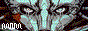

This wiki is a digital playground and personal logging system.
The aim of this wiki is to build a form of personal assistant to help with the management of a vast repository of recorded statistics which includes daily logs, notes on various projects and curated pages of general knowledge.
Oscean is written in the Uxntal programming language, and designed to be maintained from low-power devices. It is built to adapt to my needs as they change, and to technology as it evolves.
The specification of the host system was designed to be reimplemented by one person in a weekend, so it might survive this fleeting age of self-destructing informatics. The databases are in human-readable plaintext formats.
This type of website is a often referred to as a "Memex", a living document and archive of where one has been, and a tool that advises where one could go.
Consider a future device, a sort of mechanized private library in which an individual stores all his books, records, and communications, and which may be consulted with exceeding speed and flexibility. It is an enlarged intimate supplement to his memory.Vannevar Bush, As We May Think
License
The license applies to all the documented projects, the projects themselves and their assets. The platform code is under the MIT License. The assets and text content is under the BY-NC-SA4.0 License.
You are free to: Share: copy and redistribute the material in any medium or format. Adapt: remix, transform, and build upon the material.
Under the following terms: Attribution: You must give appropriate credit. NonCommercial: You may not use the material for commercial purposes. ShareAlike: You must distribute your contributions under the same license.
If you have any question or feedback, please visit the faqs or submit a bug report, for any additional informations, contact Devine Lu Linvega. You can download a copy of the entire website content and sources as a .zip.

incoming uxn oscean identity styleguide devine lu linvega devlog